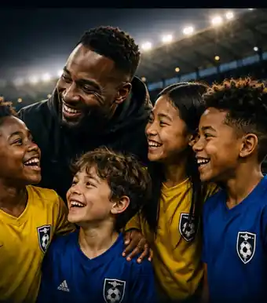
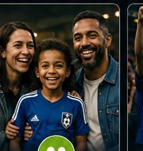
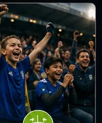

Verein
Sponsoren gewinnen, junge Fans erreichen und den Spieltag stärken.
- Neue junge Fans und Begleitpersonen am Spieltag
- Mehr Atmosphäre und regionale Sichtbarkeit
- Wenig Aufwand für euren Verein
Lokale Unternehmen wollen sinnvoll unterstützen. Kinder wollen ihren Verein erleben. Wir verbinden beides — und machen daraus ein einfaches Sponsoringprogramm für euren Club.


Sponsoren gewinnen, junge Fans erreichen und den Spieltag stärken.
Lokales Sportsponsoring mit konkreter Wirkung und sichtbarer Anerkennung.

Das Kind bewirbt sich online oder über die Schule. Eltern bestätigen nach Auswahl.

Mehr Erlebnis am Spieltag — mit Verlosung, Aktionen und leichterer Volunteer-Gewinnung.
Der direkte Einstieg in lokales Engagement.
Mehr junge Fans unterstützen und lokal sichtbarer werden.
Ein sichtbares Zeichen für die nächste Fan-Generation setzen.
Starker lokaler Beitrag mit hoher Signalwirkung in der Region.
Lokale Wirkung, sichtbare Anerkennung und ein hochwertiges Zertifikat — ohne komplizierte Sponsoringpakete.
Mit Firmenname, Ort, Sponsoring-Level, Anzahl geförderter Kinder und Saison.
Nennung und Link auf der passenden Programm- oder Saisonseite.
Einbindung in geeignete Programm- und Pressekommunikation.
Optional zusätzliche Sichtbarkeit für eine begrenzte Zeit.
Das Kind bewirbt sich. Erst nach Auswahl werden Eltern oder Erziehungsberechtigte verbindlich eingebunden.
Das Kind bewirbt sich online oder über die Schule.
Verfügbare Plätze werden nach transparenten Regeln vergeben.
Eltern bestätigen Teilnahme, Kontaktdaten und nötige Einwilligungen.
Bessere Spieltage brauchen nicht zwingend neue Infrastruktur. Kleine Aktionen und klar definierte Helfereinsätze können reichen.
Beispiel für die Unternehmensdarstellung im Sponsoringbereich.
Einfache Eventplanung und Volunteer-Recruiting für bessere Spieltage.
Viele Vereine suchen Sponsoren, neue junge Fans und zugleich einfache Lösungen, die nicht noch mehr Vereinsarbeit verursachen. Das Programm verbindet ein klar kaufbares Sponsoringangebot mit einem konkreten Nutzen für Kinder und den Spieltag.
Maximal 200 pro Verein und Saison. Ein Verein kann auch mit weniger Plätzen starten. Wenn die für die Saison freigegebenen Plätze vergeben sind, schließt das Sponsoring für diesen Verein bis zur nächsten Saison.
Unternehmen wählen eines von vier klar benannten Levels: Fan-Pate, Vereinsfreund, Jugendförderer oder Stadtpartner. Der Verein muss dadurch nicht für jedes kleine Unternehmen ein eigenes Sponsoringpaket erfinden.
Das Kind. Es kann sich direkt online oder über eine teilnehmende Schule bewerben. Erst nach Auswahl werden Eltern oder Erziehungsberechtigte eingebunden.
Konkrete lokale Wirkung, ein personalisiertes Zertifikat mit Firmenname, Ort, Sponsoring-Level und Anzahl unterstützter Kinder, Sichtbarkeit auf der passenden Programm- oder Saisonseite und optional zusätzliche Präsenz als Sponsor der Woche.
Spieltagsideen werden auf der Stadion-Seite erklärt. Für einfache Eventplanung und Volunteer-Recruiting wird RunYourEvent.com als separater Baustein verlinkt.